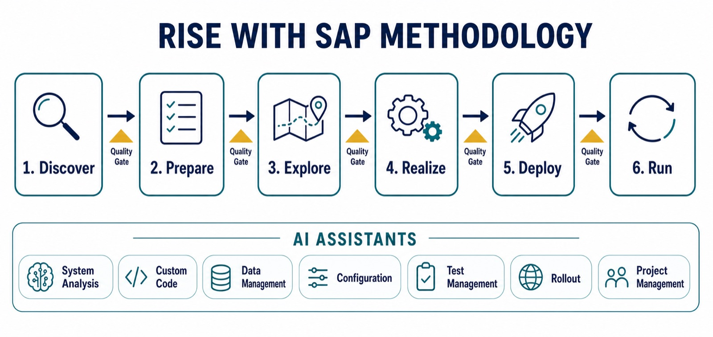

"The RISE with SAP Methodology orchestrates end-to-end business transformation and accelerates migration and modernization with AI assistants — driving continuous innovation and delivering measurable value while reducing costs and complexity."
— SAP, official RISE with SAP Methodology documentation
If your organization is planning a move to SAP's cloud ERP, the RISE with SAP Methodology is the delivery approach that will structure the entire journey, and understanding it before the project starts is one of the highest-leverage things a business or IT leader can do. By the end of this guide, you will understand what the methodology actually is, what happens in each of its six phases, how the quality gates between phases work, what the seven AI assistants do, and the misconceptions that most often trip up transformation teams. No prior SAP delivery experience assumed: every term is defined as we go.
What the RISE with SAP Methodology Is
The RISE with SAP Methodology is SAP's standardized, AI-enabled delivery approach for moving an organization from on-premises SAP systems, typically SAP ECC or an on-premises S/4HANA installation, to SAP Cloud ERP under a RISE with SAP subscription. In plain terms: RISE with SAP is the commercial offering (the subscription that bundles the cloud ERP software, infrastructure, and services), and the Methodology is the playbook for how the transformation actually gets delivered, from the first scoping workshop to ongoing operations after go-live.
SAP launched the methodology effective April 1, 2024, as one of three pillars of its RISE with SAP Migration and Modernization program, alongside transformation incentives and an innovation roadmap. It distills delivery practices learned from thousands of RISE with SAP customers over the program's first three years, and, importantly for budgeting, it is included at no additional cost for RISE subscribers. It applies whether the implementation is led by SAP itself or by a partner: SAP introduced a RISE with SAP Validated Partner recognition program to certify partners that deliver large cloud ERP projects to the methodology's standards, and has since added role-based certification for senior delivery roles.
At SAPPHIRE 2026, SAP reframed the methodology within its "Autonomous Enterprise" vision: AI assistants and agents are no longer positioned only as features of the finished system, but as active participants in the transformation itself, used to accelerate and derisk the migration. That shift, using AI to deliver the project rather than merely being the outcome of it, is what makes the current version of the methodology genuinely new.

Why It Matters: The Problem It Exists to Solve
SAP transformations are among the largest projects an enterprise ever undertakes. Industry analysis puts typical RISE migrations at costs running into the tens or even hundreds of millions of dollars, with timelines from six months to several years. And the market data shows how much hesitation that creates: as of Q4 2024, only 39% of SAP's ECC customers had purchased or subscribed to S/4HANA, meaning more than half of the installed base had not yet committed to the move, even with ECC mainstream support ending in 2027, a deadline we covered in detail in our guide to the ECC end-of-support timeline.
The methodology is SAP's structural answer to that hesitation. Projects of this size historically failed not because the software could not do the job, but because of delivery problems: scope defined poorly at the start, custom code carried over without scrutiny, testing compressed at the end, and misalignment discovered only at go-live. A standardized methodology with enforced checkpoints attacks each of those failure modes directly. For the strategic context of what RISE itself is and why SAP pushes it so hard, see our companion piece on RISE with SAP and enterprise cloud transformation.
The Six Phases, One by One
The methodology structures every project into six sequential phases. If you have encountered SAP Activate, SAP's long-standing implementation framework, the phase names will look familiar: the methodology uses this proven phased backbone and layers RISE-specific services, checkpoints, and AI accelerators on top.
| Phase | What Happens | Key Question It Answers |
|---|---|---|
| 1. Discover | Analyze the current system landscape, define scope, build the project plan and business case, request approval. | What are we transforming, and why? |
| 2. Prepare | Formal onboarding with SAP advisors, customized roadmap, success planning with milestones and KPIs. | Who does what, by when? |
| 3. Explore | Fit-to-standard analysis: compare your processes against SAP's standard processes, decide what to adopt as-is and what genuinely needs an extension. | Where do we follow the standard, and where do we extend? |
| 4. Realize | Build and configure the solution, migrate and validate data iteratively, manage organizational change and user adoption. | Does the new system actually work for our business? |
| 5. Deploy | Configure the productive system, final testing, cutover planning and go-live. | Are we ready to switch? |
| 6. Run | Operate with excellence, monitor value realization, identify continuous innovation opportunities. | How do we keep improving after go-live? |
The single most consequential phase for long-term cost is Explore. The fit-to-standard analysis is where an organization decides how much custom code survives the move. Every customization kept must be rebuilt as a clean core extension, meaning custom logic lives in side-by-side extensions on SAP Business Technology Platform (BTP) rather than as modifications inside the ERP core, so the core stays upgradable and AI-ready. We explained why clean core is the gate to SAP's AI features in our guide to planning an ECC-to-S/4HANA migration with AI readiness in mind.
Remember This
The six phases are not SAP bureaucracy; they are a forcing function for the three decisions that determine project cost: how much scope you take on (Discover), how much custom code you keep (Explore), and how much testing you refuse to compress (Realize and Deploy). Teams that treat those decisions casually in the early phases pay for them at multiples later.
Quality Gates: The Checkpoints Between Phases
A quality gate is a formal checkpoint at the end of each phase. The project team completes a structured questionnaire about what was done and how; SAP experts review the answers and return feedback and recommendations before the project proceeds. Gates also validate that the implementation stays aligned with clean core principles, backed by a clean core success plan with defined milestones and KPIs that SAP tracks through SAP Cloud ALM, the application lifecycle management tool that orchestrates the whole transformation.
The value of a gate is asymmetry: answering a questionnaire and sitting through an expert review costs days; discovering in Deploy that your data migration strategy was flawed in Realize costs months. Quality gates convert late, expensive surprises into early, cheap corrections. RISE subscribers also get dedicated onboarding advisors who run one-to-one enablement sessions, plus role-based recorded training, so the customer team is not learning the methodology from a PDF.
The AI Assistant Layer: Seven Accelerators
The 2026 evolution of the methodology embeds AI assistance across the delivery workstreams. Seven accelerators cover the most labor-intensive parts of a migration: System Analysis builds a customer-specific baseline of your current landscape; Custom Code analyzes and modernizes custom developments to reduce technical debt before the move; Data Management prepares and migrates data; Configuration optimizes settings against best practices; Test Management automates the scoping of what needs testing; Rollout manages multi-country deployments; and Project Management provides guidance and support across the plan itself.
These assistants matter because the tasks they target, code remediation, data cleansing, test scoping, are precisely the ones that historically consumed 12 to 24 months of scarce consultant time. The efficiency gains are real and measurable across the industry: we documented the tool-by-tool evidence in how AI is cutting S/4HANA migration timelines from years to months. Around the assistants sits an integrated toolchain: SAP Cloud ALM for orchestration, SAP Signavio for process analysis, WalkMe for in-application change management and training, SAP Business Transformation Center for data migration, Joule Studio for building clean core extensions, SAP Integration Suite for connectivity, and Tricentis for automated testing.
A Worked Example: A Manufacturer Moves Off ECC
To make the flow concrete, picture a mid-size manufacturer on ECC with roughly 2,000 custom objects. In Discover, the System Analysis assistant baselines the landscape and reveals that a third of those custom objects have not been executed in a year, immediate candidates for retirement rather than migration. In Prepare, the onboarding advisor helps define a success plan: go-live in 14 months, clean core KPIs agreed up front. In Explore, fit-to-standard workshops walk each business process against the cloud ERP standard; the team keeps 200 genuinely differentiating customizations for rebuild as BTP extensions and adopts the standard everywhere else. The quality gate review flags that two planned extensions duplicate standard functionality the team had missed, and they are cut.
In Realize, the Custom Code assistant remediates the surviving code while Data Management runs iterative migration cycles, each one cleaner than the last; WalkMe flows are built so end users learn the new screens inside the application itself. In Deploy, Test Management scopes the regression suite, Tricentis executes it, and the cutover happens over a planned weekend. In Run, Cloud ALM monitors operations and the team starts activating the AI features that a clean core now makes available. None of this removes the hard work, but at every step where projects classically go wrong, there was either an AI accelerator shrinking the effort or a quality gate catching the drift.
Common Misconceptions
"RISE is just hosting, so the methodology is just onboarding." No. RISE bundles software, infrastructure, and services, and the methodology governs a full business transformation, including process redesign and change management. Treating it as an infrastructure lift-and-shift is the fastest way to arrive in the cloud with all your old problems intact.
"The methodology is SAP's job, not ours." The questionnaires, fit-to-standard decisions, data ownership, and user adoption work all sit with the customer, whether the implementation is SAP-led or partner-led. The methodology structures your work as much as the vendor's.
"Quality gates are bureaucracy that slows us down." They add days per phase and are designed to prevent the months-long failure modes documented across two decades of ERP projects. Skipping the discipline does not make the risk disappear; it defers it to go-live.
"Following the methodology removes all the risk." Also no, and the honest caveats deserve airtime. Independent analysts note that RISE means trading perpetual licenses for a subscription, that bundled contracts are harder to exit or modify piecemeal, that BTP's consumption-based pricing needs active cost governance, and that clean core mandates can mean rewriting custom code that encodes years of process optimization. The methodology reduces delivery risk; the commercial and architectural trade-offs of RISE itself still require clear-eyed negotiation.
Remember This
The methodology is free, but it is not passive. Its value is only realized by teams that actually do the fit-to-standard work honestly, answer the quality gate questionnaires truthfully, and hold the clean core line when a department lobbies to keep a customization it cannot justify. A playbook only helps the team that runs the plays.
Best Practices and Where This Fits
Four practices separate smooth RISE deliveries from painful ones. First, retire before you migrate: use the System Analysis baseline to kill unused custom code in Discover, not Realize. Second, staff the fit-to-standard workshops with business decision-makers, not only IT, because "adopt the standard or extend" is a business call. Third, treat the clean core KPIs from your success plan as binding, since they determine whether SAP's embedded AI, including Joule, will actually be available to you at go-live. Fourth, use each quality gate as an internal honesty checkpoint, not a compliance formality.
In the bigger picture, the methodology is one piece of SAP's larger bet: that the path to the autonomous enterprise runs through a standardized, clean-core cloud ERP, delivered by an increasingly AI-assisted process. Whether you find that vision compelling or simply pragmatic, the delivery framework is now mature, certified across the partner ecosystem, and included in the subscription you are already paying for. Learn it before your project starts; it is the cheapest risk reduction available in the entire program.